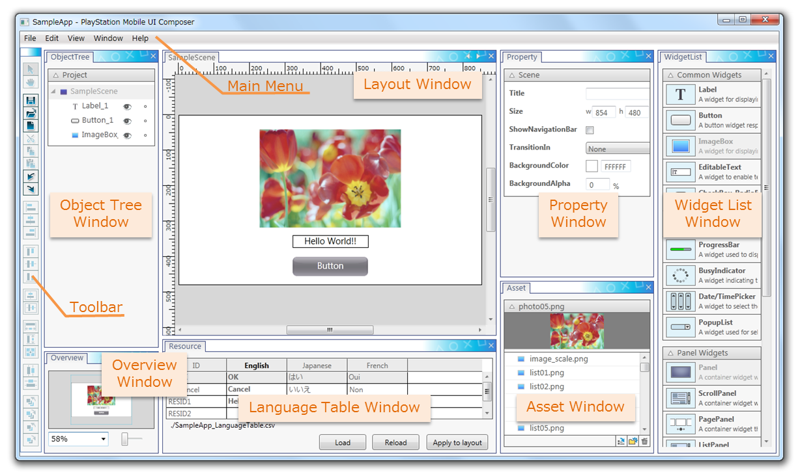
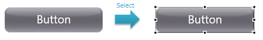
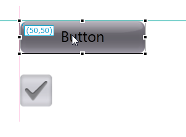
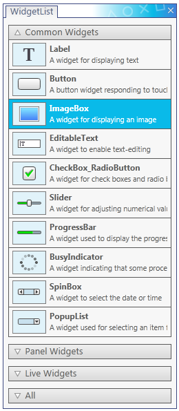
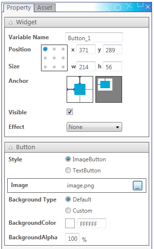
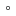
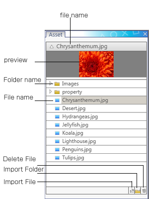
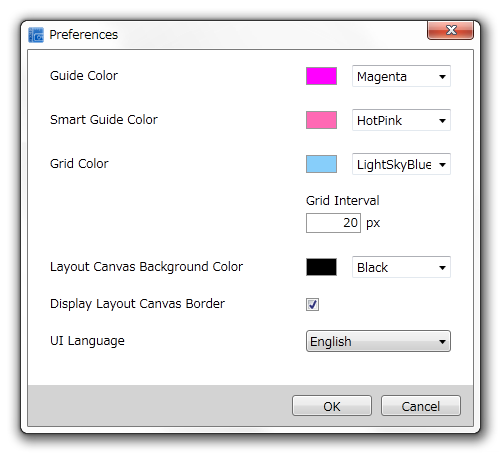

UI Composerは、PlayStation(R)Mobile(PSM)上で動作するアプリケーション（ウィンドウやメニューなど）のGUIをレイアウトするためのツールです。
ウィジェットや画像などのオブジェクトをドラッグ操作で直感的にレイアウトすることが可能です。
また、各オブジェクトの位置、サイズ、および属性の設定を行うことができます。
本章では、UI Composer の構成、各画面の役割および機能について説明します。
Contents
UI Composer は複数の画面を1つのプロジェクトファイル( xxxxx.uic )にまとめて管理します。各画面のレイアウト情報に加えて、クラス出力先のフォルダー設定やクラスが属する namespace の情報もこのファイルに保存されます。UI Composer を利用してアプリケーションを実装する場合のファイル構成は下記のようになります。:
SampleApp/ SampleApp.csproj SampleApp.uic : UI Composer プロジェクトファイル SampleApp_LanguageTable.csv : 文字列データの格納ファイル(ユーザー編集用) AppMain.cs : アプリケーションのメインロジック SampleA.cs : ユーザー定義クラスA SampleB.cs : ユーザー定義クラスB SampleC.cs : ユーザー定義クラスC SampleScene.cs : SampleScene のロジック、イベントハンドラを定義したファイル (UI Composer が出力) SampleScene.composer.cs : SampleScene のレイアウト情報を定義したファイル (UI Composer が出力) SamplePanel.cs : SamplePanel のロジック、イベントハンドラを定義したファイル (UI Composer が出力) SamplePanel.composer.cs : SamplePanel のレイアウト情報を定義したファイル (UI Composer が出力) SampleDialog.cs : SampleDialog のロジック、イベントハンドラを定義したファイル (UI Composer が出力) SampleDialog.composer.cs : SampleDialog のレイアウト情報を定義したファイル (UI Composer が出力) UIStringTable.cs : 文字列管理クラス (UI Composer が出力) assets/ : UI Composer が参照するアセットフォルダー AAA.png BBB.png
UI Composer は 複数のウィンドウから構成されています(図1, 表1)。各ウィンドウはタブの部分をドラッグすることで、ドッキングもしくはドッキングの解除が可能です。以下、順に各ウィンドウについて説明していきます。
図1 ツール全体図
表1 各ウィンドウの一覧 名称 内容 メインメニュー (Main Menu) メインメニューです。 ツールバー (Toolbar) よく使う機能をまとめたボタン群です。 レイアウトウィンドウ (Layout Window) ウィジェットをレイアウトするためのウィンドウです。 ウィジェットリストウィンドウ (Widget List Window) レイアウトキャンバス上に配置できるウィジェットが表示されます。 プロパティウィンドウ (Property Window) 各ウィジェットのプロパティ設定が表示されます。 オブジェクトツリーウィンドウ (Object Tree Window) レイアウトキャンバス上に配置されたウィジェットをツリー状に表示します。 アセットウィンドウ (Asset Window) アセットディレクトリ内にあるイメージアセットが表示されます。 オーバービューウィンドウ (Overview Window) レイアウトキャンバスの俯瞰図を表示します。 言語テーブルウィンドウ (Language Table Window) 多言語に対応したGUIを作成する際に使用します。
レイアウトウィンドウは、レイアウトキャンバス上に各種ウィジェットを配置し、アプリケーションの画面を構成していくための画面です。ウィジェットリストウィンドウ(後述)からドラッグアンドドロップして追加したウィジェットを自由に配置することが可能です。
レイアウトウィンドウは下記のような構成となっています(図2, 表2)。

図2 レイアウトウィンドウの概要
表2 レイアウトウィンドウの説明 名称 説明 ガイド (Guide) ウィジェットの位置を揃えるためのガイド線です。ガイド線を任意に設定することが可能です。 スマートガイド (Smart Guide) レイアウトキャンバスに配置されているウィジェットを基準として揃えるためのガイド線です。 グリッド (Grid) キャンバスに表示されているグリッド線です。 レイアウトウィンドウでは、ウィジェットのレイアウト編集、操作などを行うことができます。
ウィジェットを選択するとリサイズハンドルが表示されます(図3)。リサイズハンドルをドラッグすることでサイズの変更が可能です。
図3 Widget Select
またウィジェットを選択し配置を調整する際に、ガイドやスマートガイドにウィジェットを吸着させることも可能です(図4)。
図4 ガイド線への吸着
レイアウトを整列する機能としてツールバーなどにウィジェット の水平方向、垂直方向の位置ぞろえや等間隔機能などの機能を提供しています。
より詳細な解説は、 UI Composer ユーザーガイド - レイアウトガイド を参照して下さい。
ウィジェットリストウィンドウは、レイアウトキャンバス上に配置できるウィジェットの一覧です。ここからドラッグアンドドロップすることで、画面を作成します。
PSM UI Toolkitには様々なウィジェットが用意されています。UI Composer でレイアウトできるウィジェットはこのウィジェットリストウィンドウに一覧表示されます(図5)。
ウィジェットリストウィンドウ上のウィジェットを選択し、レイアウトキャンバスへ向かってドラッグアンドドロップすることで、選択したウィジェットを配置することができます。
図5 ウィジェットリストウィンドウ
ウィジェットは下記の種類にグループ分けされて表示されています。
- 標準ウィジェット (ButtonやLabelなどの広く一般的なウィジェット)
- パネルウィジェット (標準ウィジェットなどを格納するウィジェット)
- PSM オリジナルウィジェット (PSM UI Toolkit独自のウィジェット)
- すべてのウィジェット（上記ウィジェットを全て表示します）
ウィジェットのラインナップや詳細については UI Toolkitプログラミングガイド - ウィジェット を参照して下さい。
プロパティウィンドウには、各ウィジェットに対して設定可能なプロパティが、全ウィジェット共通項目とウィジェット固有項目に分かれて表示されます(図6)。
プロパティウィンドウ上での設定値が変更されると、レイアウトキャンバス上のウィジェットの表示もそれに伴って変化します。ただし、一部設定値がレイアウトキャンバス上に反映されない属性もあります。
図6 プロパティウィンドウ
各ウィジェットの設定項目については UI Composer ユーザーガイド - ウィジェット を参照して下さい。
オブジェクトツリーウィンドウは、プロジェクト内に存在するウィジェットをレイアウト画面ごとにツリー表示するウィンドウです(図7, 表3)。
各レイアウト画面内のウィジェットの関係を俯瞰し、ツリー内の構成の編集や、表示の切り替えを行うことができます。

図7 オブジェクトツリーウィンドウ
表3 オブジェクトツリーウィンドウの説明 名称 説明 レイアウト画面 (Layout Screen) プロジェクト内に存在するレイアウトのクラス名が表示されています。 ウィジェット (Widget) 各レイアウトに配置されているウィジェットの変数名が表示されています。 表示アイコン (Visible Icon) レイアウトキャンバス上で表示するかどうかを表しています。クリックすることで切り替えることができます。
- : 表示
: 非表示
- : 親ウィジェットが非表示
ロックアイコン (Lock Icon) レイアウトキャンバス上でウィジェットを選択できるかどうかを表しています。クリックすることで切り替えることができます。
: ロック状態
-  : アンロック状態
ツリー内の順序は、Zオーダーに対応しており、下にあるウィジェットほどレイアウト画面で手前に表示されます。
オブジェクトツリー内で、ウィジェットをドラッグアンドドロップすることで、Zオーダーの変更や親子関係の変更を行うことができます。また、コンテキストメニューから複製、切り取り、貼り付け、削除などの操作を行うことができます。
なお、表示アイコンはプロパティウィンドウのVisibleとは異なり、出力されるコードには影響しません。
アセットウィンドウは、アセットフォルダーの中に保存されている画像データを表示します(図8)。
図8 アセットウィンドウ
(プロジェクトファイルのあるフォルダー)/assets を参照しています。そのため、OS側から *(プロジェクトファイルのあるフォルダー)/assets* 以下にアセットを追加した場合でもアセットリストの表示に反映されます。
対応している画像フォーマットは .jpg .png です。
アセットウィンドウは、表4の3つの表示から構成されています。
表4 アセットウィンドウの説明 名称 説明 画像データのプレビュー 選択した画像データのプレビュー表示です。プレビューとリストの間にあるセパレーターを調整することで、プレビュー画像の大きさが変化します。 画像データの一覧 プロジェクト設定で指定されたアセットフォルダーを参照し、そのフォルダー内の画像データをツリー形式で表示しています。 各種操作ボタン アセットフォルダーへの画像/フォルダーの追加・削除を行うためのボタンです。 通常、レイアウト画面にImage Boxを追加する場合、ウィジェットリストウィンドウからレイアウトキャンバスに配置し、Imageプロパティに任意の画像を設定することになります。アセットウィンドウを利用するとこの一連の作業を簡易化することが可能で、画像データの一覧から直接レイアウトキャンバスにドラッグアンドドロップすることで、Imageプロパティに選択した画像が割り当てられたImage Boxをレイアウト画面に追加することが可能になります。
オーバービューウィンドウは、レイアウトキャンバスの全体を俯瞰するためのウィンドウです。
レイアウトウィンドウ内のレイアウトキャンバスの拡大率を制御したり、レイアウトキャンバスの表示する領域を変更することが可能です。
オーバービューウィンドウは下記2つの要素で構成されています(図9)。
- レイアウトキャンバスの俯瞰図
- 拡大/縮小率変更用のコントロール

図9 オーバービューウィンドウ
レイアウトキャンバスの俯瞰図には、レイアウトウィンドウに表示される領域(View Area)を青枠線で表示しています。俯瞰図上でクリックもしくはドラッグ操作を行うことで、レイアウトキャンバスの表示領域を変更することができます。
拡大/縮小率を変更するには、既定値を選択するためのドロップダウンリストとユーザーが自由に倍率を変更できるスライダーが利用可能です。ドロップダウンリストに直接倍率を入力することも可能です。
他の言語をサポートするアプリケーションの開発用に各種文字列を表示するために文字列を管理するためのウィンドウです。
そのために、言語テーブルウィンドウは、アプリケーションの中で使用する文字列を複数設定するための画面です。
初期状態では英語の文字列設定をすることが可能です。また、その他の言語を拡張して設定することができます。
言語テーブルウィンドウは下記2つの要素で構成されています(図10)。
- 言語テーブル
- 各種ボタン
行には各言語、列には文字列IDが表示され、各行と列に対応したセルに文字列IDに対応した各言語の文字列が表示されます。

図10 言語テーブルウィンドウ
言語テーブルでは、文字列IDとそれに対応する文字列を入力・編集することができます。文字列IDと表示する文字列の追加削除、対応する言語の追加削除を行うことができます。 また、csvファイルの読み込み・書き出しをサポートしています。
詳細は、 UI Composer ユーザーガイド - アプリケーションの多言語対応 を参照して下さい。
すべての操作はメニューから操作することが可能ですが、特によく使う機能は、ツールバーにも機能が用意されています。
ツールバーでは各操作を迅速に使うことができます。表5に用意されている機能の説明を行います。
表5 ツールバーの説明 アイコン 名称 説明 Arrow Cursor Cursor ツールにて、Widgetの拡大、縮小、移動などの操作をすることができます HandModeButton Hand ツールにて、キャンバスの移動をすることができます 
Save レイアウトした結果を UI Composer プロジェクトファイルに保存します 
Open 既存の UI Composer プロジェクトファイルを開きます New 新しい Layout を作ることができます 
Cut キャンバス上のウィジェットを Cut します 
Copy キャンバス上のウィジェットを Copy します Paste コピーしたウィジェットを Paste します Undo キャンバス上の操作を一つ前の操作に戻します 
Redo キャンバス上で一つ戻した操作を前の操作に戻します Align Left 二つ以上のウィジェットを選んだ状態で左合わせの状態にします 
Align Center (Horizontal) 二つ以上のウィジェットを選んだ状態で横方向の中央合わせの状態にします 
Align Right 二つ以上のウィジェットを選んだ状態で右合わせの状態にします Align Top 二つ以上のウィジェットを選んだ状態で上合わせの状態にします 
Align Center (Vertical) 二つ以上のウィジェットを選んだ状態で縦方向の中央合わせの状態にします 
Align Bottom 二つ以上のウィジェットを選んだ状態で下合わせの状態にします 
Align Horizontal Center in Container ウィジェットを親のウィジェットの水平方向の中央に合わせます Align Vertical Center in Container ウィジェットを親のウィジェットの上下方向の中央に合わせます 
Make Same Width 二つ以上のウィジェットの幅を同じにします。 
Make Same Height 二つ以上のウィジェットの高さを同じにします Make Same Size 二つ以上のウィジェットのサイズを同じにします 
Make Horizontal Space Equal 三つ以上のウィジェットの横の間隔を同じにします 
Make Vertical Space Equal 三つ以上のウィジェットの縦の間隔を同じにします 
Send to Back ウィジェットの重なる順番を一番下にします 
Send to Front ウィジェットの重なる順番を一番上にします Send Backward ウィジェットの重なる順番を一つ下にします Send Forward ウィジェットの重なる順番を一つ上にします
本アプリケーションには、プロジェクト設定とツールの環境設定の２つの画面があります。
下記に各設定画面で設定できるものの説明を行います。
メインメニューから [ファイル] - [プロジェクト設定] を選択し、プロジェクトの環境設定を行うことができます(図11, 表6)。

図11 Project Property
表6 プロジェクト設定の説明 設定項目 説明 Sources output folder ビルド時に生成されるソースファイルが出力されるフォルダーを指定できます。 namespace 出力されるクラスの namespace が指定できます。
メインメニューから [ファイル] - [環境設定] を選択し、ツールの環境設定を行うことができます(図12, 表7)。
図12 ツールの環境設定
表7 ツールの環境設定の説明 設定項目 説明 ガイド線の色 ユーザーが任意の場所に設定できるガイド線の色です。 スマートガイド線の色 ウィジェットをドラッグ＆ドロップする際などに自動的に表示されるスマートガイドの色です。 グリッド線の色 レイアウトキャンバスに等間隔で表示されるグリッド線の色です。 グリッド線の間隔 グリッド線の間隔を設定することができます。 レイアウトキャンバスの背景色 レイアウトキャンバスの背景色を設定できます。 レイアウトキャンバスの境界線の表示 レイアウトキャンバスの境界線の表示の有無を設定できます。 UI 表示言語 UIComposer 内の UI の表示文言の言語を設定できます。